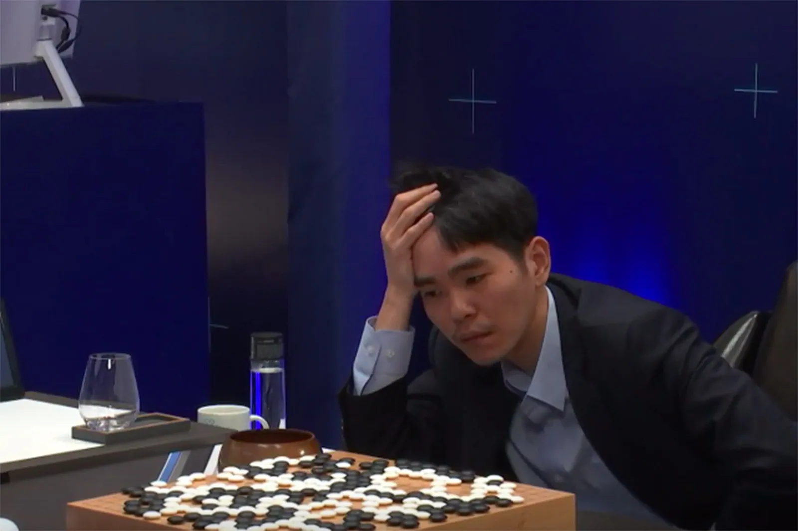
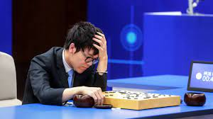
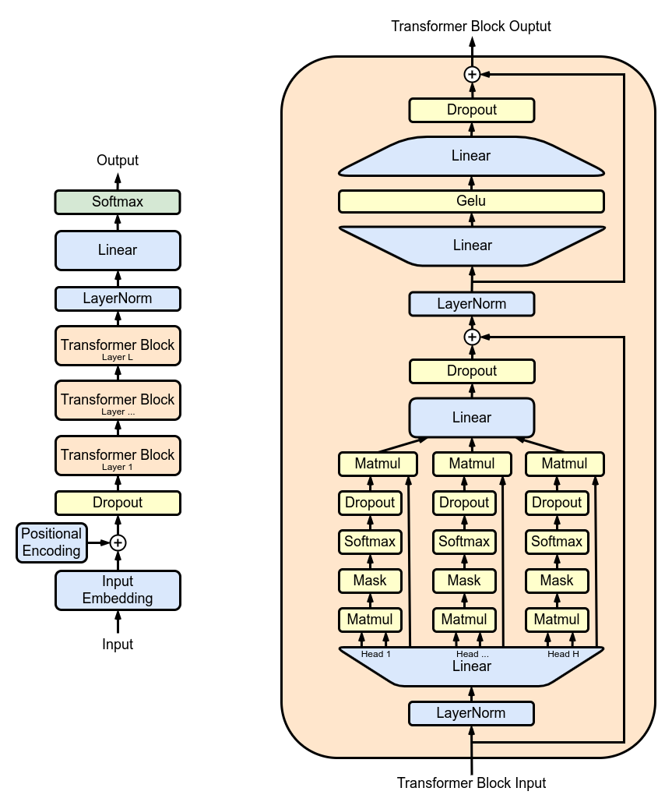

/AlphaGo/
DeepMind's AlphaGo defeated top Go player Lee Sedol in Seoul, South Korea, drawing comparisons to the Kasparov chess match with Deep Blue nearly 20 years earlier.
AlphaGo is a computer program that plays the board game Go. It was developed by the London-based DeepMind Technologies, an acquired subsidiary of Google (now Alphabet Inc.).
AlphaGo and its successors use a Monte Carlo tree search algorithm to find its moves based on knowledge previously acquired by machine learning, specifically by an artificial neural network (a deep learning method) by extensive training, both from human and computer play. A neural network is trained to identify the best moves and the winning percentages of these moves. This neural network improves the strength of the tree search, resulting in stronger move selection in the next iteration.
In October 2015, in a match against Fan Hui, the original AlphaGo became the first computer Go program to beat a human professional Go player without handicap on a full-sized 19×19 board. In March 2016, it beat Lee Sedol in a five-game match, the first time a computer Go program has beaten a 9-dan professional without handicap. Although it lost to Lee Sedol in the fourth game, Lee resigned in the final game, giving a final score of 4 games to 1 in favour of AlphaGo. In recognition of the victory, AlphaGo was awarded an honorary 9-dan by the Korea Baduk Association.[8] The lead up and the challenge match with Lee Sedol were documented in a documentary film also titled AlphaGo, directed by Greg Kohs. The win by AlphaGo was chosen by Science as one of the Breakthrough of the Year runners-up on 22 December 2016.
At the 2017 Future of Go Summit, the Master version of AlphaGo beat Ke Jie, the number one ranked player in the world at the time, in a three-game match, after which AlphaGo was awarded professional 9-dan by the Chinese Weiqi Association.
After the match between AlphaGo and Ke Jie, DeepMind retired AlphaGo, while continuing AI research in other areas. The self-taught AlphaGo Zero achieved a 100–0 victory against the early competitive version of AlphaGo, and its successor AlphaZero was perceived as the world's top player in Go by the end of the 2010s.
|  |  |
AlphaGo beat Lee Sedol in 2016 and Ke Jie in 2017
/OpenAI/
OpenAI Five
OpenAI Five is a computer program by OpenAI that plays the five-on-five video game Dota 2. Its first public appearance occurred in 2017, where it was demonstrated in a live one-on-one game against the professional player, Dendi, who lost to it. The following year, the system had advanced to the point of performing as a full team of five, and began playing against and showing the capability to defeat professional teams.
By choosing a game as complex as Dota 2 to study machine learning, OpenAI thought they could more accurately capture the unpredictability and continuity seen in the real world, thus constructing more general problem-solving systems. The algorithms and code used by OpenAI Five were eventually borrowed by another neural network in development by the company, one which controlled a physical robotic hand. OpenAI Five has been compared to other similar cases of artificial intelligence (AI) playing against and defeating humans, such as AlphaStar in the video game StarCraft II, AlphaGo in the board game Go, Deep Blue in chess, and Watson on the television game show Jeopardy!.
Comparison chart
| OpenAI 1v1 bot (2017) | OpenAI Five (2018) | |
|---|---|---|
| Size of observation | ~3.3kB | ~36.8kB |
| Batches per minute | ~20 | ~60 |
| Experience collected | ~300 years per day | ~180 years per day |
| Batch size | 8,388,608 observations | 1,048,576 observations |
| Observations per second of gameplay | 10 | 7.5 (12) |
| CPUs | 60,000 CPU cores on Microsoft Azure | 128,000 pre-emptible CPU cores on the Google Cloud Platform (GCP) |
| GPUs | 256 K80 GPUs on Azure | 256 P100 GPUs on the GCP |
GPT
The first GPT was introduced in 2018 by OpenAI.
Generative pretraining (GP) was a long-established concept in machine learning applications, but the transformer architecture was not available until 2017 when it was invented by employees at Google. That development led to the emergence of large language models such as BERT in 2018 which was a pre-trained transformer (PT) but not designed to be generative (BERT was an "encoder-only" model). Also around that time, in 2018, OpenAI published its article entitled "Improving Language Understanding by Generative Pre-Training," in which it introduced the first generative pre-trained transformer (GPT) system ("GPT-1").
Prior to transformer-based architectures, the best-performing neural NLP (natural language processing) models commonly employed supervised learning from large amounts of manually-labeled data. The reliance on supervised learning limited their use on datasets that were not well-annotated, and also made it prohibitively expensive and time-consuming to train extremely large language models.
The semi-supervised approach OpenAI employed to make a large-scale generative system—and was first to do with a transformer model—involved two stages: an unsupervised generative "pretraining" stage to set initial parameters using a language modeling objective, and a supervised discriminative "fine-tuning" stage to adapt these parameters to a target task.
Original GPT model
/Google/
Transformer
A transformer is a deep learning architecture, initially proposed in 2017, that relies on the parallel multi-head attention mechanism. It is notable for requiring less training time than previous recurrent neural architectures, such as long short-term memory (LSTM), and its later variation has been prevalently adopted for training large language models on large (language) datasets
This architecture is now used not only in natural language processing and computer vision, but also in audio[10] and multi-modal processing. It has also led to the development of pre-trained systems, such as generative pre-trained transformers (GPTs) and BERT (Bidirectional Encoder Representations from Transformers).
In 2016, Google Translate gradually replaced the older statistical machine translation approach with the newer neural-networks-based approach that included a seq2seq model combined by LSTM and the "additive" kind of attention mechanism. They achieved a higher level of performance than the statistical approach, which took ten years to develop, in only nine months.
In 2017, the original (100M-sized) encoder-decoder transformer model with a faster (parallelizable or decomposable) attention mechanism was proposed in the "Attention is all you need" paper. As the model had difficulties converging, it was suggested that the learning rate should be linearly scaled up from 0 to maximal value for the first part of the training (i.e. 2% of the total number of training steps). The intent of the transformer model is to take a seq2seq model and remove its recurrent neural networks, but preserve its additive attention mechanism.
In 2018, in the ELMo paper, an entire sentence was processed before an embedding vector was assigning to each word in the sentence. A bi-directional LSTM was used to calculate such, deep contextualized embeddings for each word, improving upon the line of research from bag of words and word2vec,an encoder-only transformer was used in the (more than 1B-sized) BERT model, improving upon ELMo.